Встановлення та налаштування веб-сервера. Вивчення протоколу HTTP ( Hyper Text Transfer Protocol ) та SSI.
1. Отримати за допомогою методу GET головну сторінку вашого документа на сервері (1 скріншот):
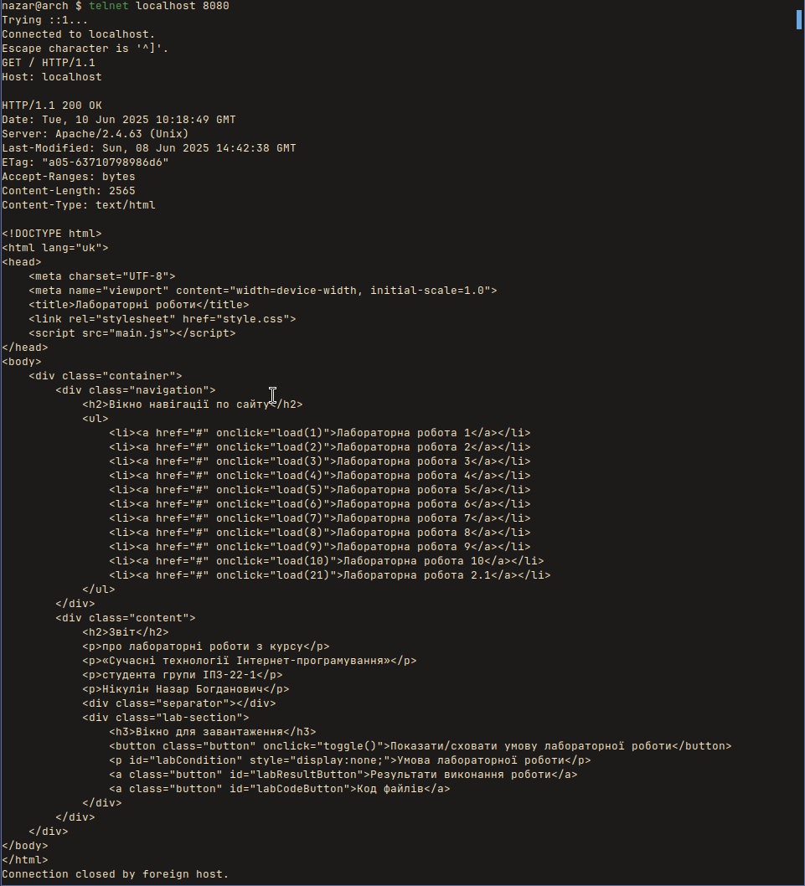
2. Визначте версію специфікації HTTP, яку підтримує сервер, а також версію та специфікацію програмного забезпечення, що працює на сервері. Визначте також дату та час, у який було сформовано відповідь, та час останньої модифікації головної сторінки сервера. (1 скріншот);
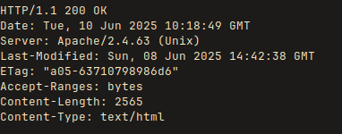
3. Запитайте будь-який неіснуючий документ на сервері та зверніть увагу на відповідь, повернений сервером. (1 скріншот);
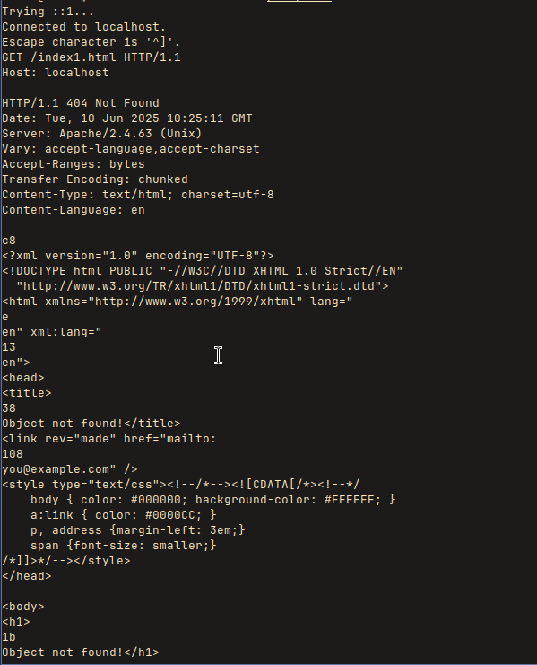
4. Отримайте будь-які два документи, на які є посилання в отриманому документі; (2 скріншоти);
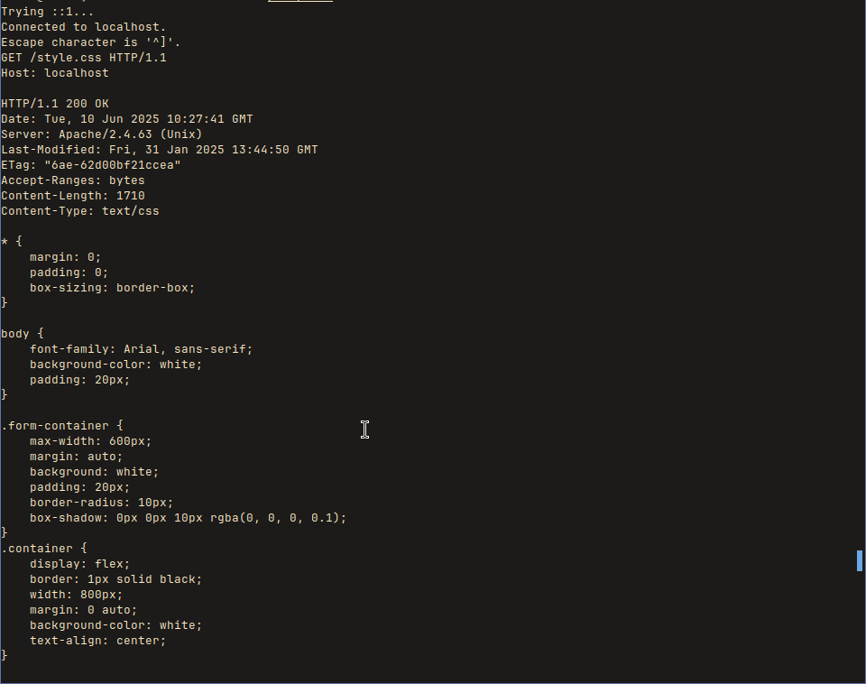
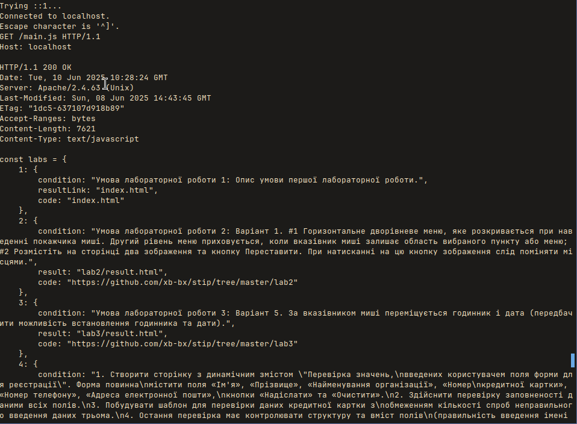
5. Отримайте перші п'ятнадцять байт будь-якого документа із віртуального каталогу на сервері. Визначте за поверненою відповіддю повний розмір запитаного документа. Отримайте останні сім байт цього документа. (2 скріншоти);
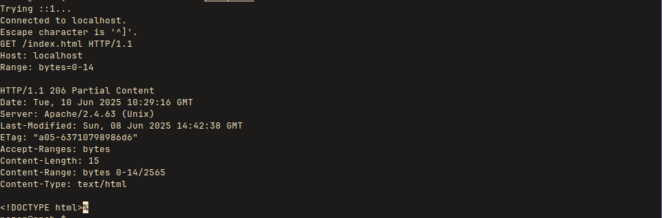
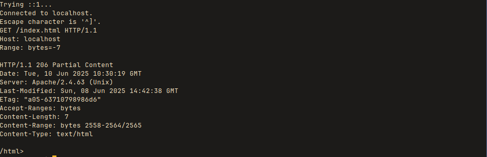
6. Надішліть запити за допомогою методів PUT та DELETE на сервер. (2 скріншоти);
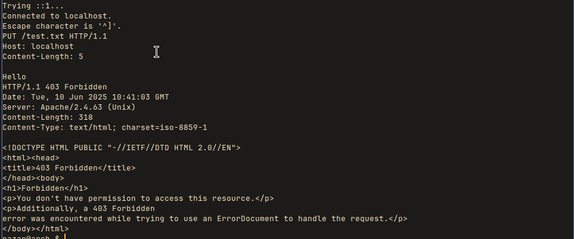
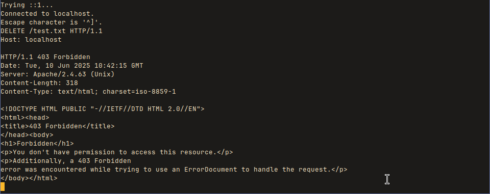
7. За допомогою методу OPTIONS запитайте інформацію про параметри сервера в цілому, про параметри кореневого каталогу сервера. Зверніть увагу на список методів, що підтримуються сервером для кожного каталогу. (1 скріншот);
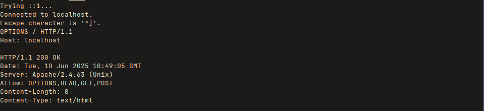
8. Надішліть два різні запити за допомогою методу TRACE на сервер і зверніть увагу на відповіді, повернені сервером. (2 скріншоти);
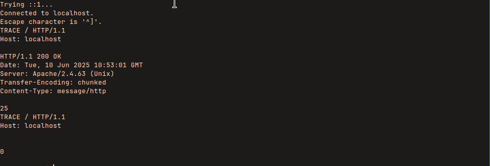
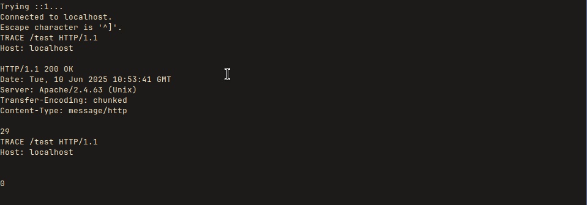